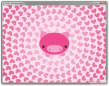

Views
0.8.0
The codename for LÖVE 0.8.0 is Rubber Piggy. It is currently released.
Changes from 0.7.2
Additions
- Added release error screen.
- Added alpha to love.graphics.setBackgroundColor.
- Added Canvas:clear(r, g, b, a).
- Added Canvas support to love.graphics.drawq.
- Added Canvas:getWidth and Canvas:getHeight.
- Added love.graphics.arc.
- Added Source:seek and Source:tell.
- Added color interpolation to ParticleSystems.
- Added automatic PO2 padding for systems not supporting the OpenGL extension.
- Added UTF-8 support for fonts.
- Added Box2D error handling for some commonly failing functions.
- Added ability for fused release games to have their write dir in appdata.
- Added love.graphics.shear.
- Added origin to font printing.
- Added love.graphics.getMode.
- Added per-sprite colors on SpriteBatches.
- Added PixelEffects.
- Added love.graphics.isSupported.
- Added love.graphics.getCanvas.
- Added love.event.quit.
- Added stencil masks.
- Added alternative SpriteBatch provider, it should work everywhere now.
- Added a loader for binary modules.
- Added Thread:getKeys().
- Added option of fractions for quads.
- Added PNG, JPEG and GIF support to ImageData:encode.
- Added 64-bit support for Mac OS X.
- Added premultiplied blending mode.
- Added love.graphics.setDefaultImageFilter/getDefaultImageFilter.
- Added SpriteBatch:set.
- Added new events system, with support for custom events and long event names.
- Added sound attenuation by distance.
- Added SpriteBatch:getImage.
- Added combine color mode.
- Added automatic random seeding to love.run.
- Added support for the subtract BlendMode on older graphics cards.
- Added love._os field, which contains the OS the game is running on.
Bugfixes
- Fixed wrapping for single words.
- Fixed tracebacks not showing filenames.
- Fixed love.graphics.push/pop capable of causing overflows/underflows.
- Fixed setScissor on Canvases.
- Fixed several issues with audio, e.g. clicks and pops in mp3s.
- Fixed crashes when bodies were destroyed during collisions.
- Fixed bound SpriteBatches corrupting when drawing.
- Fixed thread-safety issues with ImageData.
- Fixed memory leaks in audio sources.
- Fixed Thread:set (previously send) accidentally changing the type.
- Fixed SoundData allocating the wrong number of samples.
- Fixed SpriteBatch support on Intel cards.
- Fixed love.filesystem.lines leaking.
- Fixed most leaking on unclosed File objects.
- Fixed crashes when operating on non-existent files.
- Fixed a bug where empty files on Windows would never reach EOF.
- Fixed crash when SoundData runs out of memory.
- Fixed ordering of loaders, love should have priority over lua.
- Fixed several miscellaneous memory leaks.
- Fixed a few cases where strings with \0 in them would not be stored correctly.
- Fixed LÖVE's startup time being in the first dt.
- Fixed internal string conversions, they are faster now.
- Fixed (bad) performance of ImageData:paste.
- Fixed love.graphics.toggleFullscreen not maintaining graphics state.
Other Changes
- Renamed SpriteBatch:lock/unlock to bind/unbind.
- Renamed Framebuffer to Canvas.
- Renamed Thread:send/receive to set/get.
- Renamed love.graphics.setRenderTarget to setCanvas.
- Updated love.joystick to be 1-indexed.
- Updated Sources to update more cleanly and control more intuitively.
- Updated font engine.
- Updated line drawing to a custom system.
- Updated love.timer.sleep to use seconds, like the rest of love.
- Updated love.timer to be more accurate.
- Updated love.graphics.circle to have max(10, r) as default for segments.
- Updated ImageData:encode to write to files directly.
- Updated version compatibility system to actually do something.
- Updated love.run's order, events are checked just before update.
- Updated Box2D to version 2.2.1.
- Updated sdl to 1.2.15 on Windows
- Updated freetype to 2.4.9 on Windows
- Updated libjpeg to 8d on Windows
- Updated libmodplug to 0.8.8.4 on Windows
- Updated libogg to 1.3.0 on Windows
- Updated libpng to 1.5.10 on Windows
- Updated mpg123 to 1.13.7 on Windows
- Updated openal-soft to 1.14 on Windows
- Updated zlib to 1.2.6 on Windows
Removals
- Removed Canvas auto-clearing.
- Removed EncodedImageData.
- Removed old syntax for require (with extension and slashes).
- Removed love.graphics.setFont([file, ][size]).
- Removed Thread:kill.
  no-game screen
no-game screen